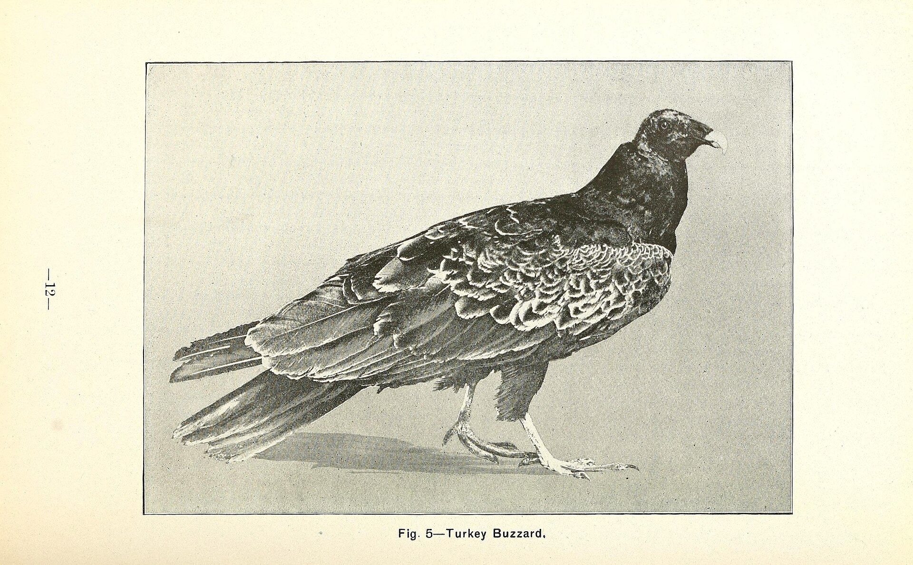

第 11 章
猎犬、铁丝网与病毒
佐治亚州肉类加工厂的传送带在1962年初春的一个星期二下午短暂停顿了四十二秒。

古典猪瘟病毒（Classical swine fever virus）示意图
图源：维基共享资源 · Internet Archive Book Images · No restrictions
不是因为机械故障。质检员露丝·科尔曼拦下了一头猪的体。她的工作站在屠宰线的第十七号位置——体经过开膛、劈半之后，到达她这里时还是温热的。她的任务是用肉眼检查每一具体上的淋巴结，用手触摸那些可疑的腺体，决定哪些可以放行进入食品链，哪些需要标记、取样、送检。
联合猪肉加工公司每天处理一千二百头猪。分到每头猪身上的检查时间大约是九秒钟。科尔曼在这条线上已经站了六年。
她的左手拇指因为常年按压淋巴结而微微变形，指尖的触感却比任何实验室培养皿都敏锐。
正常的颌下淋巴结应该有蚕豆大小，质地均匀，按压时像一块紧实的脂肪。她面前这头猪——耳标显示来自县东北部一家中型养殖场——两个颌下淋巴结都肿到了核桃尺寸，其中一个切开后显现出一种她只在培训手册上见过的淡黄色干酪样坏死。她把样本放进标本袋，贴上标签，在送检单“淋巴结异常”那栏打了个勾。
备註栏里她写了三行字：肿大，切面干酪样坏死，疑感染性病变。标本袋进了冷藏箱。物流公司明天上午会来取件，送往亚特兰大的州农业部门动物疾病诊断实验室。依照过去两年的平均周期，检测结果大约在三周后寄回。
科尔曼在工位日志上记下了这枚样本的编号，然后传送带重新启动。下一头猪的体滑到她面前，淋巴结正常，放行。
她不知道的是，那枚编号为GA-62-0311的样本，将在未来六周里穿过三层行政辖区的缝隙，而它所携带的病原体——猪布鲁氏菌——已经在那些缝隙的另一头，找到了不受任何表格约束的传播路径。
问题的起源远在这间加工厂和那头家猪之外，远在科尔曼的职位出现之前，甚至远在联合猪肉加工公司建起这条屠宰线之前。但它的后果正在科尔曼的手套上等待一张确认它的报告单。
野猪携带的病原体清单很长。伪狂犬病病毒不传染人，但会导致猪流产和仔猪死亡，一个确诊阳性病例就足以触发对整个养殖场的扑杀令——这是猪肉产业悬在头顶的利剑。钩端螺旋体通过尿液污染水源，人和牲畜共患。
旋毛虫的幼虫包裹在野猪肌肉组织里，等待一个烹饪温度不够的猎手把它吃进小肠。但这些病原体的传播有一个共同前提：需要接触。要么接触活体，要么接触体，要么接触被污染的水或饲料。在过去三个世纪的大部分时间里，这个前提限定了它们的传播半径——野猪待在森林和沼泽里，家猪关在围栏和猪舍里。它们各自活在各自的制度空间内。
猪布鲁氏菌改变了这个前提。它可以不经接触传播。一头公猪的生殖道分泌物污染了地面，一头家母猪在运输途中在那里停留过，感染就可以完成。
它可以跨物种传播。猎人手处理猎物时，细菌通过皮肤微小的破口进入人体，潜伏期长，症状模糊——周期性发热、关节疼痛、夜间盗汗——足够让县卫生所的医生误诊断三次。它还可以沿着人为建立的商业链路跳跃。一头野猪在得克萨斯州被捕获，装上拖车，运到佐治亚州的狩猎围栏，在铁丝网内被付费客户猎杀，期间它和围栏内的家养母猪交配——这是合法的，围栏经营者有权补充种群——于是布鲁氏菌从野猪进入家猪，再从家猪进入屠宰线。
科尔曼截住的那头家猪，事后追溯，就是这样感染的。狩猎围栏是野猪经济中最特殊的一种土地用途。它介于野外与养殖场之间，在法律上占据着一个连州议员都说不清归属的灰色地带。围栏的经营者从得克萨斯或佛罗里达的捕猎手那里购买活野猪，按头计價，运回自己的土地上放养，再按狩猎体验向客户收费。
这是一种高度商业化的操作，但经营许可证由州自然资源部门颁发，理由是围栏内的野猪属于野生动物——尽管它们是被买来、放进去、围起来的。自然资源部门的逻辑是：只要一头猪的祖上在三百年前是西班牙人带来的家畜，经过足够多代的野化，它就在法律上获得了野生动物的身份。这一定性是1918年由一位联邦法官在一桩涉及北卡罗来纳州狩猎权的案件里确立的，此后从未被任何州立法机构认真复审过。
而州农业部门对同一片围栏内发生的事情则持另一套逻辑。如果围栏内的野猪和家猪有任何接触——配种、同槽进食、甚至只是隔着铁丝网蹭了蹭鼻子——农业部门就主张这构成了家畜接触风险，应当适用家畜防疫条例。
两个部门在口头上同意协调监测，但谁也不肯把管辖权让给对方。协调落到纸面上，变成了一封措辞客气的备忘录，落款是1959年3月，存档于亚特兰大州政府大楼地下二层的文件柜里。此后三年，双方没有就这份备忘录开过一次联席会。布鲁氏菌就在这三年里穿过了那道铁丝网。
狩猎围栏的铁丝网构造和农场主莫尔在伊利诺用来围玉米田的那种不同。围栏的铁丝需要更高，网眼更密，底部要用粗得多的钢桩固定——一头成年公野猪的冲击力足以让普通农场围栏断三根铁丝。但围栏面临的问题不是防猪从外面进来，而是防猪从里面出去。这一点区别在围栏的日常维护中产生了反直觉的结果：经营者花大力气检查围栏外侧是否完好，因为客户的眼睛会看见那里；围栏内侧，尤其是背对公路、灌木遮蔽的那几段，往往松得多。东佐治亚那家狩猎围栏——它的名字被记录在州自然资源部门签发的第GN-58-47号许可证上，但人们只叫它老巴克的围栏——围栏的东北段就处在这样的状态。
那里的铁丝从五年前安装后没有更换过，底部的几股已经锈蚀到可以徒手掰断。老巴克知道这件事。他在1959年的一份购买围栏材料的发票说明他买了替换用的铁丝和钢桩，但记录只到这一步。替换从未发生。
1961年秋季的一天——精確日期无法考证，因为没有目击者，围栏内也没有安装任何监控设备——至少一头成年公猪从老巴克的围栏东北段撞破了锈蚀的铁丝网，挤开已经松动的钢桩，进入围栏外的次生林。
不是一头特別大的猪，老巴克后来向自然资源部门的调查员描述它时，只说它大概两百磅，獠牙磨损得厉害，应该是一头年龄在五岁以上的雄性。这个年龄意味着它经历过至少三个狩猎季，在围栏内被客户追逐过不下二十次。它对围栏内部的地形、水源点和逃生路线比任何一头猪都熟悉。
当它终于在铁丝网上找到一个缺口时，它只是做了它被猎狗逼迫时反复做过的事：用肩骨顶开障碍，钻过去。调查员记录下了围栏铁丝网上被挣开的破洞痕迹：六股铁丝中的三股完全断裂，断裂面有深褐色锈蚀，显示损坏已持续一段时间；
另外两股向外弯曲，弯曲角度和方向符合一头大形动物从内部强力挤压的特征；钢桩根部被拱出了大约四英寸，周围泥土松散，有明显的猪蹄印迹。围栏外三十码处的松软地面上，有一组清晰的猪蹄印向西北方向延伸。调查员沿着蹄印走了大约两百码，蹄印消失在一条干涸的溪流石滩上。他没有继续追踪。那是一头公猪。
在它之后的六个月里，又有两头母猪——调查员后来推测它们是通过同一个破洞的残余缝隙挤出围栏的——进入了同一片次生林。它们在那里建立了一个母系群。
到1962年3月科尔曼在屠宰线上截住那个淋巴结时，那个母系群已经产下了第一窝杂交猪仔。它们的基因一半来自野猪父亲——那个从老巴克围栏逃逸的褐鬃公猪——另一半来自三头母猪中的一头，那头母猪本身也有四分之三的欧亚野猪血统。杂交猪仔在生物学上比它们的纯种亲代更危险。它们继承了野猪的环境耐受性和杂食性，同时保留了一部分家猪的繁値效率——母系群中的野母猪每年通常只产了一窝，但带有家猪血统的杂交母猪可以达到两窝，偶尔三窝。
这一繁殖优势，加上当地没有天敌的次生林环境，意味着一件事：到科尔曼的报告单走完它的行政旅程时，那个母系群的数量已经从最初的五头增加到了至少十二头。
报告单的旅程本身就是一个关于管辖权的寓言。诊断实验室在收到样本后的第四天完成了细菌培养。猪布鲁氏菌，血清型3。实验室主任签发了确认报告，并依造佐治亚州1960年修订的动物传染病报告条例，将报告同时抄送至三个地址：州农业部门畜牧防疫处、州自然资源部门野生动物管理处，以及——因为猪布鲁氏菌是人畜共患病——州公共卫生署的流行病学监测科。三个地址，三条完全独立的行政链路。
农业部门畜牧防疫处在收到报告的当天就派了一名兽医官到那头家猪的来源养殖场。他检查了场内其余两百四十头猪，抽取了三十六份血样，发现另外三头和那头被科尔曼截住的猪同批次的育肥猪呈阳性。感染链条清晰但有限。兽医官下令隔离那批猪的猪舍，消杀了场地，并向场主发出了防疫整改通知。
这是农业部门标准操作流程的完整执行，每一环都落在了它被授权的范围内。文件归档，案例关闭。
但农业部门无权追踪围栏里的野猪。自然资源部门野生动物管理处在收到同一份报告的五天后，派出了前面提到的那位调查员去老巴克的围栏。他的勘察确认了铁丝网的破损和逃逸痕迹。他向老巴克发了一份整改通知，要求修复围栏设施以防止野生动物非正常流出，并做了警告。
他的调查记录后来成为确认逃逸猪与感染猪之间地理关联的关键文件——围栏距离那家养殖场的直线距离是四英里半，其间没有其他家猪养殖设施。
猪布鲁氏菌的野外存活期可以长达数周，在有遮蔽的潮湿土壤中更久。一头受感染的野猪的活动范围在繁季可以轻易覆盖这个距离。因果链在地理上成立。
但自然资源部门无权对已经逃逸的野猪进行防疫追踪。它只能管理围栏内的野生动物，一旦动物穿过了围栏铁丝网，它就在法律上进入了野外——而野外的野猪，按照佐治亚州法的历史解释，属于自由漫游的猎物。猎物携带什么细菌，不在自然资源部门的法定职责之内。
它的职责是维护狩猎资源，而不是控制疾病。权责的裂缝就在这里：一头携带人畜共患病原体的野猪在周四中午跑出了狩猎围栏，自然资源部门在它跑出去之后仍然对它拥有名义上的物种管辖权，但没有追踪和扑杀它的法定授权。农业部门拥有防疫授权，但这个授权在它跨过铁丝网的那一瞬间就终止了——农业部门的家畜防疫条例管辖的是家畜及处于人工饲养状态下的野生动物。问题卡在了两个条文之间的那个及字上：一旦野猪脫离了人工饲养状态，它在这个及的哪一侧？
州公共卫生署的流行病学监测科被这个及卡了六周。公卫署收到的报告是一份复印件——实验室主任按条例抄送，但公卫署在接收后分类归档时，把这份报告归入了动物疫病通报低优先级的类目下。
这个分类并非失职。公卫署的法定职责是监测人感染病例，不是追踪动物疫情。只有当一个人被确诊感染了猪布鲁氏菌病，他的病例报告才会触发公卫署的调查程序——回遡感染来源，追踪接触者，发布公共健康预警。
在此之前，一份动物疫情的通报在法律上只是信息，不是指令。科尔曼并不知道这些。她只知道三周过去了，四周过去了，她还没有收到GA-62-0311号样本的正式检测结果。她向主管问了两次。主管打了一个电话给诊断实验室，实验室说结果已经寄出。寄出到哪里，寄给谁，接电话的技师说不清。
第五周的时候，科尔曼收到了一封装在州农业部门信封里的信。不是正式的检测报告，而是一份抬头印着畜牧防疫处的简函。信中说，她提交的样本已被确认为猪布鲁氏菌阳性，来源养殖场已经受到适当处置，感谢她的职业警觉。信末有一行附註：相关通报已抄送州自然资源部门及公共卫生署。此案在农业部门内部已告结案，如您有进一步疑问，请联系上述部门。
函件没有告诉她感染的源头是饲养场还是野猪。没有告诉她是否有人在追查这条传播链的来龙去脉。
更没有告诉她，那头在铁丝网上撞出缺口的褐鬃公猪的后代正在四英里半之外的次生林里觅食，拱土，排泄含有布鲁氏菌的尿液，而那片林地的土壤湿度、遮蔽程度和温度恰好是这种细菌野外存活的最适条件。
科尔曼把这份简函钉在了她的日志本里。她在下一行的空白处用铅笔写了一行字：源头未查明。
六周后的一个星期四，她才从当地报纸上读到了这个案子的另一块碎片。《佐治亚中部卫报》的县域新闻版刊登了一条短消息：本县东北部一处农场报告出现猪布鲁氏菌疑似病例，农场主称其猪群此前无感染史，并抱怨政府未就附近是否存在野猪传播风险提供任何信息。记者在消息末尾引述了县农业推广站一位官员的回应，大意是目前没有证据表明家猪感染与本地野猪种群存在直接关联，相关部门正在监测中。相关部门。
四个字。它覆盖了三套独立的行政体系、两个互相不承认对方管辖权的州级部门、一份没有人执行的联席会议备忘录，以及一头已经在这一片词语的阴影中产下第二代猪仔的杂交母猪。
科尔曼把报纸摺起来，夹进了日志本的同一页。她在源头未查明下面又加了一行：监测中——1962年4月。这一天距她在那头猪的淋巴结上第一次按下拇指，过去了四十七天。
四十七天足够做什么？足够那头逃逸的公猪在次生林里为自己圈出一片领地，用獠牙剥掉松树的幼皮做标记，在雨季的软泥里留下清晰的蹄印。足够三头母猪在它圈定的领地里找到隐蔽的灌木丛做窝，吃下足够多的橡实、蕨根和小型齿动物以积蓄脂肪。足够第一窝猪仔断奶，开始学着用还没有长硬的鼻拱撬开板蓝根茎。足够细菌在新宿主的生殖道、尿液和胎盘中建立稳定的群落。足够任何一个在那片次生林里设陷阱捕猎的白人猎人——他们中很多人习惯徒手处理猎物，手掌上布满旧伤和新口——在一次不经意的接触中把布鲁氏菌接种进自己的血液。
但四十七天不够一份同时属于三个部门的报告单找到它在任何一张办公桌上的最终落点。问题不只是慢。慢是现象，不是结构。
结构性的问题是：在这套体系里，没有任何一个机构拥有完整的管辖权去追踪一头穿越了多层行政边界的野猪携带的病原体。自然资源部门可以追踪野猪的活动范围——它拥有无线电项圈技术、种群调查方法和分布地图，但它的法定职责到种群管理为止。
农业部门拥有完整的家畜防疫工具——隔离、扑杀、消杀、补偿评估，但它的法定职责在围栏铁丝网的外侧终止。公共卫生署可以启动人感染病例调查——它有实验室网络、流调团队和信息发布渠道，但它的行动前提是一个人已经生病，去看了医生，医生正确诊断并上报了病例。
在这三导防火墙之间的缝隙里，病原体不受任何一方的监测，也不在任何一方的响应范围内。它只是流动。这种碎片化不是设计出来的。它是在过去一个世纪里一层一层沉积下来的。州自然资源部门的前身是野生动物管理机构，它的原始使命是在无限制的狩猎导致多个物種濒危后保育野生动植物资源——它的组织基因里没有疾病监测这一项。
州农业部门的组织基因来自畜牧产业监管，它的核心任务是保证家畜生产和食品安全，野生动物在它的世界观里是外部威胁而不是管理对象。公共卫生署则是更晚近的产物，它的体制深层记忆是1918年流感大流行和随后的流行病学制度化，它的注意力和预算长期锚定在人传人传染病上，动物来源的人畜共患疫病在它那里属于边缘议题。
三个部门各自由不同的联邦法律授权，从不同的国会委员会获得拔款，回应不同利益集团的诉求。当一头野猪同时触发了这三个部门的管辖权时，没有任何一个部门把跨部门协调写在自己的核心KPI里。老巴克的铁丝网破洞就这样获得了它的制度对应物。
在亚特兰大州政府大樓里，自然资源部门野生动物管理处的一位中层官员在1962年5月写了一份内部备忘录。他在备忘录里建议就野生动物疫病监测的跨部门协调机制召开一次会商。他把草稿送给了他的上级。上级在页角批了一行字：本财年预算已无空间安排额外会议，待下财年再议。备忘录被归档。
同一个月，农业部门畜牧防疫处的技术官员在整理季度报告时，注意到猪布鲁氏菌的阳性样本数比去年同期增加了两例。他在统计表的备註栏里注明增幅在正常波动范围内。他没有——也不可能——把这个数字和四英里半之外那个正在扩大的野猪母系群联系起来，因为他的表格只记录家猪数据，野猪不在他的统计纵列里。科尔曼继续在她的工位上工作。
传送带每天仍然以九秒钟一头猪的速度运转。她又发现过两次淋巴结异常，都不是布鲁氏菌。一次是普通的链球菌感染，另一次是机械损伤引起的局部炎症。她把这两份样本都按标准流程送检，在日志上做了记录。每次她翻开日志本，都能看见那行铅笔字源头未查明。她没有擦掉它。
到1962年仲夏，东佐治亚那个逃逸野猪母系群的第三代已经出生。它们的数量不再是一只两只，甚至不是十二只。没有人知道準确数字——自然资源部门在那个时期没有对该区域进行系统的野猪种群调查，而当地猎人的目击报告星散且不一致。
但根据后来回溯性的种群模型推算，在食物充裕、没有天敌、基础繁殖群已经建立的条件下，一个以五头为起点的野猪小种群可以在十八个月内增长到三十至五十头。每一头都是潜在的布鲁氏菌携带者。每一头都可以在它的活动范围内向土壤、水源和其它动物排放细菌。每一头都不承认州农业部门与州自然资源部门之间那条在纸面上画出的管辖权边界。
而人感染的第一例确诊报告直到那年深秋才出现在公共卫生署的统计系统里。不是猎人。不是屠宰工人。而是一个十二岁的男孩。他住在距离那片次生林不到两英里的一个农村家庭里，家里养了两头家猪作为自用。男孩在秋天帮父亲清理猪圈时摔倒，手掌被地上的碎石划破，伤口接触了猪粪和尿液的混合物。
两个月后他开始出现原因不明的周期性发热，夜间盗汗湿透床单，双膝和脊背关节疼痛到无法走路。县卫生所的医生先后诊为流感、风湿热、青少年关节炎。直到第三次就诊，一位年资较长的医生在翻看他的病历后问了一个问题：家里养不养猪？血液培养显示猪布鲁氏菌。
公卫署的流行病学调查员在接到病例报告后的第七天访问了男孩家的农场。他们在两头家猪中发现了阳性抗体。在猪圈附近的土壤样本中培养出了布鲁氏菌。在方圆三英里内的野生动物活动痕迹中，他们釆集到了野猪的粪便——其中一份检测阳性。
调查员追到了老巴克的围栏，追到了那家已经被农业部门消杀过的养殖场，追到了科尔曼六十三天前钉在日志本里的那行铅笔字。传播链在回溯中完整显现：老巴克的围栏铁丝网破损→逃逸公猪进入次生林→建立母系群→病原体通过环境扩散→家猪接触感染→人接触感染。每一个环节都是真实的，每一段推理都有实验室证据支持。
但当调查员顺着这条链向上追溯时，他发现每一环与下一环之间都横着一导行政边界：围栏归自然资源部门管，养殖场归农业部门管，人归公卫署管，而那头在中间地带自由活动的野猪——携带和排放病原体的核心环节——不在任何一个部门的完整管辖权之内。调查员在最终报告的建议部分写了一句：建议建立跨部门野猪疫病监测与应急响应联动机制。
这份报告的落款日期是1963年1月。它在公卫署的档案柜里和自然资源部门那份没有批下来的备忘录入同一个目录——那个目录的类名叫待落实建议。而在那次生林里，第四代猪仔正在这个待字的庇护下出生。它们不阅读备忘录，不等待拔款，不尊重表格。它们只是繁殖，拱土，排泻，携带，传播。在人类治理体系的语言里，这叫管理真空；在病原体的传播地图上，这是最畅通的路径。